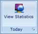

Ribbon Button label can be shown in multiple lines using the property IsMultiLine.
|
XAML
<sync:RibbonButton LargeIcon="network.png" SizeMode="Large" Label="View Statistics" IsMultiLine="True"/> |
Figure 686: A typical Ribbon button with Multi Line
|
XAML
<sync:RibbonButton LargeIcon="network.png" SizeMode="Large" Label="View Statistics" IsMultiLine="False"/> |

Figure 687: A typical Ribbon button without Multi Line